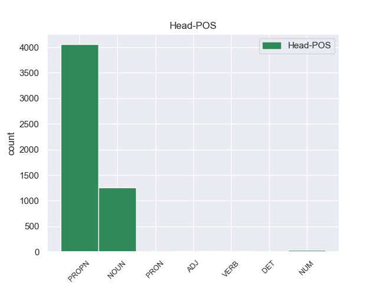

Distribution of features within this leaf

Agreement Rules sorted by frequency.
- When the dependent token is the flat-name(flat:name) of the head token, and the dependent token is PROPN.
1 На _ _ _ _ 0 _ _ _
2 тех _ _ _ _ 0 _ _ _
3 же _ _ _ _ 0 _ _ _
4 состязаниях _ _ _ _ 0 _ _ _
5 он _ _ _ _ 0 _ _ _
6 опередил _ _ _ _ 0 _ _ _
7 в _ _ _ _ 0 _ _ _
8 беге _ _ _ _ 0 _ _ _
9 всех _ _ _ _ 0 _ _ _
10 , _ _ _ _ 0 _ _ _
11 кроме _ _ _ _ 0 _ _ _
12 длинноногого _ _ _ _ 0 _ _ _
13 учителя _ _ _ _ 0 _ _ _
14 математики _ _ _ _ 0 _ _ _
15 Михаила Михаил PROPN _ Animacy=Anim|Case=Gen|Gender=Masc|Number=Sing 0 _ _ _
16 Александровича Александрович PROPN _ Animacy=Anim|Case=Gen|Gender=Masc|Number=Sing 15 flat:name 15:flat:name SpaceAfter=No
17 . _ _ _ _ 0 _ _ _
1 Мы _ _ _ _ 0 _ _ _
2 живем _ _ _ _ 0 _ _ _
3 менее _ _ _ _ 0 _ _ _
4 чем _ _ _ _ 0 _ _ _
5 в _ _ _ _ 0 _ _ _
6 сорока сорок NUM _ Case=Loc 7 nummod 7:nummod _
7 километрах километр NOUN _ Animacy=Inan|Case=Loc|Gender=Masc|Number=Plur 0 _ _ _
8 от _ _ _ _ 0 _ _ _
9 Москвы _ _ _ _ 0 _ _ _
10 , _ _ _ _ 0 _ _ _
11 но _ _ _ _ 0 _ _ _
12 поблизости _ _ _ _ 0 _ _ _
13 нет _ _ _ _ 0 _ _ _
14 железной _ _ _ _ 0 _ _ _
15 дороги _ _ _ _ 0 _ _ _
16 , _ _ _ _ 0 _ _ _
17 да _ _ _ _ 0 _ _ _
18 и _ _ _ _ 0 _ _ _
19 шоссе _ _ _ _ 0 _ _ _
20 от _ _ _ _ 0 _ _ _
21 наших _ _ _ _ 0 _ _ _
22 мест _ _ _ _ 0 _ _ _
23 далековато _ _ _ _ 0 _ _ _
24 , _ _ _ _ 0 _ _ _
25 потому _ _ _ _ 0 _ _ _
26 и _ _ _ _ 0 _ _ _
27 лес _ _ _ _ 0 _ _ _
28 у _ _ _ _ 0 _ _ _
29 нас _ _ _ _ 0 _ _ _
30 хороший _ _ _ _ 0 _ _ _
31 , _ _ _ _ 0 _ _ _
32 чистый _ _ _ _ 0 _ _ _
33 , _ _ _ _ 0 _ _ _
34 не _ _ _ _ 0 _ _ _
35 израненный _ _ _ _ 0 _ _ _
36 любителями _ _ _ _ 0 _ _ _
37 пиршеств _ _ _ _ 0 _ _ _
38 на _ _ _ _ 0 _ _ _
39 лоне _ _ _ _ 0 _ _ _
40 природы _ _ _ _ 0 _ _ _
41 . _ _ _ _ 0 _ _ _
1 Походила _ _ _ _ 0 _ _ _
2 она _ _ _ _ 0 _ _ _
3 , _ _ _ _ 0 _ _ _
4 другая _ _ _ _ 0 _ _ _
5 будет _ _ _ _ 0 _ _ _
6 , _ _ _ _ 0 _ _ _
7 третья _ _ _ _ 0 _ _ _
8 , _ _ _ _ 0 _ _ _
9 снова _ _ _ _ 0 _ _ _
10 очередь _ _ _ _ 0 _ _ _
11 доброй _ _ _ _ 0 _ _ _
12 Ивановны _ _ _ _ 0 _ _ _
13 подойдет _ _ _ _ 0 _ _ _
14 , _ _ _ _ 0 _ _ _
15 и _ _ _ _ 0 _ _ _
16 она _ _ _ _ 0 _ _ _
17 скажет _ _ _ _ 0 _ _ _
18 мужу _ _ _ _ 0 _ _ _
19 : _ _ _ _ 0 _ _ _
20 " _ _ _ _ 0 _ _ _
21 Ваньша Ваньша PROPN _ Animacy=Anim|Case=Nom|Gender=Masc|Number=Sing 0 _ _ _
22 ты ты PRON _ Case=Nom|Number=Sing|Person=2 21 flat:name 21:flat:name SpaceAfter=No
23 , _ _ _ _ 0 _ _ _
24 Ваньша _ _ _ _ 0 _ _ _
25 , _ _ _ _ 0 _ _ _
26 давай _ _ _ _ 0 _ _ _
27 Ананьевну _ _ _ _ 0 _ _ _
28 возьмем _ _ _ _ 0 _ _ _
29 , _ _ _ _ 0 _ _ _
30 пошто _ _ _ _ 0 _ _ _
31 она _ _ _ _ 0 _ _ _
32 одна _ _ _ _ 0 _ _ _
33 мыкается _ _ _ _ 0 _ _ _
34 - _ _ _ _ 0 _ _ _
35 то _ _ _ _ 0 _ _ _
36 ? _ _ _ _ 0 _ _ _
37 " _ _ _ _ 0 _ _ _
1 А _ _ _ _ 0 _ _ _
2 всего _ _ _ _ 0 _ _ _
3 по _ _ _ _ 0 _ _ _
4 стране _ _ _ _ 0 _ _ _
5 - _ _ _ _ 0 _ _ _
6 80 _ _ _ _ 0 _ _ _
7 соединений _ _ _ _ 0 _ _ _
8 и _ _ _ _ 0 _ _ _
9 воинских _ _ _ _ 0 _ _ _
10 частей часть NOUN _ Animacy=Inan|Case=Gen|Gender=Fem|Number=Plur 0 _ _ _
11 ( _ _ _ _ 0 _ _ _
12 из _ _ _ _ 0 _ _ _
13 них они PRON _ Case=Gen|Number=Plur|Person=3 10 nummod 10:nummod _
14 72 _ _ _ _ 0 _ _ _
15 в _ _ _ _ 0 _ _ _
16 структуре _ _ _ _ 0 _ _ _
17 Министерства _ _ _ _ 0 _ _ _
18 обороны _ _ _ _ 0 _ _ _
19 , _ _ _ _ 0 _ _ _
20 3 _ _ _ _ 0 _ _ _
21 в _ _ _ _ 0 _ _ _
22 пограничных _ _ _ _ 0 _ _ _
23 войсках _ _ _ _ 0 _ _ _
24 и _ _ _ _ 0 _ _ _
25 5 _ _ _ _ 0 _ _ _
26 во _ _ _ _ 0 _ _ _
27 внутренних _ _ _ _ 0 _ _ _
28 войсках _ _ _ _ 0 _ _ _
29 ) _ _ _ _ 0 _ _ _
30 . _ _ _ _ 0 _ _ _
1 Все _ _ _ _ 0 _ _ _
2 наверняка _ _ _ _ 0 _ _ _
3 помнят _ _ _ _ 0 _ _ _
4 многочисленные _ _ _ _ 0 _ _ _
5 финансовые _ _ _ _ 0 _ _ _
6 пирамиды _ _ _ _ 0 _ _ _
7 в _ _ _ _ 0 _ _ _
8 1990-х 1990-й ADJ _ Case=Loc|Degree=Pos|Number=Plur 9 nummod 9:nummod _
9 годах год NOUN _ Animacy=Inan|Case=Loc|Gender=Masc|Number=Plur 0 _ _ _
10 , _ _ _ _ 0 _ _ _
11 кризисных _ _ _ _ 0 _ _ _
12 во _ _ _ _ 0 _ _ _
13 всех _ _ _ _ 0 _ _ _
14 отношениях _ _ _ _ 0 _ _ _
15 . _ _ _ _ 0 _ _ _
1 Под _ _ _ _ 0 _ _ _
2 усиленным _ _ _ _ 0 _ _ _
3 конвоем _ _ _ _ 0 _ _ _
4 Хутомо Хутомо PROPN _ Animacy=Anim|Case=Nom|Gender=Masc|Number=Sing 0 _ _ _
5 " _ _ _ _ 0 _ _ _
6 Томми _ _ _ _ 0 _ _ _
7 " _ _ _ _ 0 _ _ _
8 Мандала мандала NOUN _ Animacy=Anim|Case=Nom|Gender=Masc|Number=Sing 4 flat:name 4:flat:name _
9 Путра _ _ _ _ 0 _ _ _
10 был _ _ _ _ 0 _ _ _
11 доставлен _ _ _ _ 0 _ _ _
12 в _ _ _ _ 0 _ _ _
13 офис _ _ _ _ 0 _ _ _
14 генерального _ _ _ _ 0 _ _ _
15 прокурора _ _ _ _ 0 _ _ _
16 , _ _ _ _ 0 _ _ _
17 откуда _ _ _ _ 0 _ _ _
18 должен _ _ _ _ 0 _ _ _
19 быть _ _ _ _ 0 _ _ _
20 эскортирован _ _ _ _ 0 _ _ _
21 в _ _ _ _ 0 _ _ _
22 Сипинанг _ _ _ _ 0 _ _ _
23 . _ _ _ _ 0 _ _ _
1 Тем то PRON _ Animacy=Inan|Case=Ins|Gender=Neut|Number=Sing 0 _ _ _
2 самым самый ADJ _ Case=Ins|Degree=Pos|Gender=Neut|Number=Sing 1 flat:name 1:flat:name _
3 пресса _ _ _ _ 0 _ _ _
4 стала _ _ _ _ 0 _ _ _
5 бы _ _ _ _ 0 _ _ _
6 вооруженней _ _ _ _ 0 _ _ _
7 при _ _ _ _ 0 _ _ _
8 выполнении _ _ _ _ 0 _ _ _
9 одной _ _ _ _ 0 _ _ _
10 из _ _ _ _ 0 _ _ _
11 своих _ _ _ _ 0 _ _ _
12 важнейших _ _ _ _ 0 _ _ _
13 функций _ _ _ _ 0 _ _ _
14 - _ _ _ _ 0 _ _ _
15 защите _ _ _ _ 0 _ _ _
16 Конституции _ _ _ _ 0 _ _ _
17 СССР _ _ _ _ 0 _ _ _
18 . _ _ _ _ 0 _ _ _
Disagree Examples:
1 Слава слава NOUN _ Animacy=Inan|Case=Nom|Gender=Fem|Number=Sing 0 _ _ _
2 богу бог NOUN _ Animacy=Anim|Case=Dat|Gender=Masc|Number=Sing 1 flat:name 1:flat:name SpaceAfter=No
3 , _ _ _ _ 0 _ _ _
4 это _ _ _ _ 0 _ _ _
5 все _ _ _ _ 0 _ _ _
6 прошло _ _ _ _ 0 _ _ _
7 , _ _ _ _ 0 _ _ _
8 и _ _ _ _ 0 _ _ _
9 теперь _ _ _ _ 0 _ _ _
10 другое _ _ _ _ 0 _ _ _
11 - _ _ _ _ 0 _ _ _
12 покойное _ _ _ _ 0 _ _ _
13 , _ _ _ _ 0 _ _ _
14 доверчивое _ _ _ _ 0 _ _ _
15 и _ _ _ _ 0 _ _ _
16 нежное _ _ _ _ 0 _ _ _
17 чувство _ _ _ _ 0 _ _ _
18 , _ _ _ _ 0 _ _ _
19 вот _ _ _ _ 0 _ _ _
20 что _ _ _ _ 0 _ _ _
21 теперь _ _ _ _ 0 _ _ _
22 ! _ _ _ _ 0 _ _ _
1 Вот _ _ _ _ 0 _ _ _
2 описание описание NOUN _ Animacy=Inan|Case=Nom|Gender=Neut|Number=Sing 0 _ _ _
3 одного один NUM _ Case=Gen|Gender=Neut 2 nummod 2:nummod _
4 из _ _ _ _ 0 _ _ _
5 изобретений _ _ _ _ 0 _ _ _
6 Леонардо _ _ _ _ 0 _ _ _
7 да _ _ _ _ 0 _ _ _
8 Винчи _ _ _ _ 0 _ _ _
9 : _ _ _ _ 0 _ _ _
10 " _ _ _ _ 0 _ _ _
11 Сидению _ _ _ _ 0 _ _ _
12 нужника _ _ _ _ 0 _ _ _
13 дай _ _ _ _ 0 _ _ _
14 поворачиваться _ _ _ _ 0 _ _ _
15 , _ _ _ _ 0 _ _ _
16 как _ _ _ _ 0 _ _ _
17 окошечку _ _ _ _ 0 _ _ _
18 монахов _ _ _ _ 0 _ _ _
19 , _ _ _ _ 0 _ _ _
20 и _ _ _ _ 0 _ _ _
21 возвращаться _ _ _ _ 0 _ _ _
22 в _ _ _ _ 0 _ _ _
23 свое _ _ _ _ 0 _ _ _
24 первое _ _ _ _ 0 _ _ _
25 положение _ _ _ _ 0 _ _ _
26 противовесом _ _ _ _ 0 _ _ _
27 . _ _ _ _ 0 _ _ _
1 Например _ _ _ _ 0 _ _ _
2 , _ _ _ _ 0 _ _ _
3 в _ _ _ _ 0 _ _ _
4 двух _ _ _ _ 0 _ _ _
5 случаях случай NOUN _ Animacy=Inan|Case=Loc|Gender=Masc|Number=Plur 0 _ _ _
6 из _ _ _ _ 0 _ _ _
7 пяти пять NUM _ Case=Gen 5 nummod 5:nummod SpaceAfter=No
8 , _ _ _ _ 0 _ _ _
9 когда _ _ _ _ 0 _ _ _
10 мы _ _ _ _ 0 _ _ _
11 переливали _ _ _ _ 0 _ _ _
12 пуповинную _ _ _ _ 0 _ _ _
13 кровь _ _ _ _ 0 _ _ _
14 новорожденных _ _ _ _ 0 _ _ _
15 их _ _ _ _ 0 _ _ _
16 братьям _ _ _ _ 0 _ _ _
17 и _ _ _ _ 0 _ _ _
18 сестрам _ _ _ _ 0 _ _ _
19 , _ _ _ _ 0 _ _ _
20 понадобилась _ _ _ _ 0 _ _ _
21 еще _ _ _ _ 0 _ _ _
22 и _ _ _ _ 0 _ _ _
23 пересадка _ _ _ _ 0 _ _ _
24 донорского _ _ _ _ 0 _ _ _
25 костного _ _ _ _ 0 _ _ _
26 мозга _ _ _ _ 0 _ _ _
27 . _ _ _ _ 0 _ _ _
1 В _ _ _ _ 0 _ _ _
2 целом _ _ _ _ 0 _ _ _
3 среди _ _ _ _ 0 _ _ _
4 причин _ _ _ _ 0 _ _ _
5 смешения _ _ _ _ 0 _ _ _
6 генофондов _ _ _ _ 0 _ _ _
7 можно _ _ _ _ 0 _ _ _
8 назвать _ _ _ _ 0 _ _ _
9 нехватку нехватка NOUN _ Animacy=Inan|Case=Acc|Gender=Fem|Number=Sing 0 _ _ _
10 женщин _ _ _ _ 0 _ _ _
11 у _ _ _ _ 0 _ _ _
12 одной один NUM _ Case=Gen|Gender=Fem 9 nummod 9:nummod _
13 из _ _ _ _ 0 _ _ _
14 контактирующих _ _ _ _ 0 _ _ _
15 сторон _ _ _ _ 0 _ _ _
16 , _ _ _ _ 0 _ _ _
17 смешанные _ _ _ _ 0 _ _ _
18 браки _ _ _ _ 0 _ _ _
19 по _ _ _ _ 0 _ _ _
20 различным _ _ _ _ 0 _ _ _
21 социальным _ _ _ _ 0 _ _ _
22 причинам _ _ _ _ 0 _ _ _
23 - _ _ _ _ 0 _ _ _
24 установление _ _ _ _ 0 _ _ _
25 добрососедских _ _ _ _ 0 _ _ _
26 отношений _ _ _ _ 0 _ _ _
27 посредством _ _ _ _ 0 _ _ _
28 родства _ _ _ _ 0 _ _ _
29 , _ _ _ _ 0 _ _ _
30 стремление _ _ _ _ 0 _ _ _
31 избежать _ _ _ _ 0 _ _ _
32 пагубных _ _ _ _ 0 _ _ _
33 последствий _ _ _ _ 0 _ _ _
34 инбридинга _ _ _ _ 0 _ _ _
35 , _ _ _ _ 0 _ _ _
36 уничтожение _ _ _ _ 0 _ _ _
37 мужской _ _ _ _ 0 _ _ _
38 части _ _ _ _ 0 _ _ _
39 населения _ _ _ _ 0 _ _ _
40 и _ _ _ _ 0 _ _ _
41 пленение _ _ _ _ 0 _ _ _
42 женской _ _ _ _ 0 _ _ _
43 , _ _ _ _ 0 _ _ _
44 приводящее _ _ _ _ 0 _ _ _
45 к _ _ _ _ 0 _ _ _
46 демографическому _ _ _ _ 0 _ _ _
47 геноциду _ _ _ _ 0 _ _ _
48 и _ _ _ _ 0 _ _ _
49 т. _ _ _ _ 0 _ _ _
50 д _ _ _ _ 0 _ _ _
51 . _ _ _ _ 0 _ _ _
1 В _ _ _ _ 0 _ _ _
2 то _ _ _ _ 0 _ _ _
3 же _ _ _ _ 0 _ _ _
4 время _ _ _ _ 0 _ _ _
5 гражданин _ _ _ _ 0 _ _ _
6 ФРГ _ _ _ _ 0 _ _ _
7 , _ _ _ _ 0 _ _ _
8 проживающий _ _ _ _ 0 _ _ _
9 в _ _ _ _ 0 _ _ _
10 Берлине _ _ _ _ 0 _ _ _
11 , _ _ _ _ 0 _ _ _
12 но _ _ _ _ 0 _ _ _
13 хранящий хранить VERB _ Aspect=Imp|Case=Nom|Gender=Masc|Number=Sing|Tense=Pres|VerbForm=Part|Voice=Act 0 _ _ _
14 деньги _ _ _ _ 0 _ _ _
15 в _ _ _ _ 0 _ _ _
16 одном один NUM _ Case=Loc|Gender=Masc 13 nummod 13:nummod _
17 из _ _ _ _ 0 _ _ _
18 венских _ _ _ _ 0 _ _ _
19 банков _ _ _ _ 0 _ _ _
20 , _ _ _ _ 0 _ _ _
21 австрийскому _ _ _ _ 0 _ _ _
22 государству _ _ _ _ 0 _ _ _
23 платить _ _ _ _ 0 _ _ _
24 ничего _ _ _ _ 0 _ _ _
25 не _ _ _ _ 0 _ _ _
26 должен _ _ _ _ 0 _ _ _
27 . _ _ _ _ 0 _ _ _